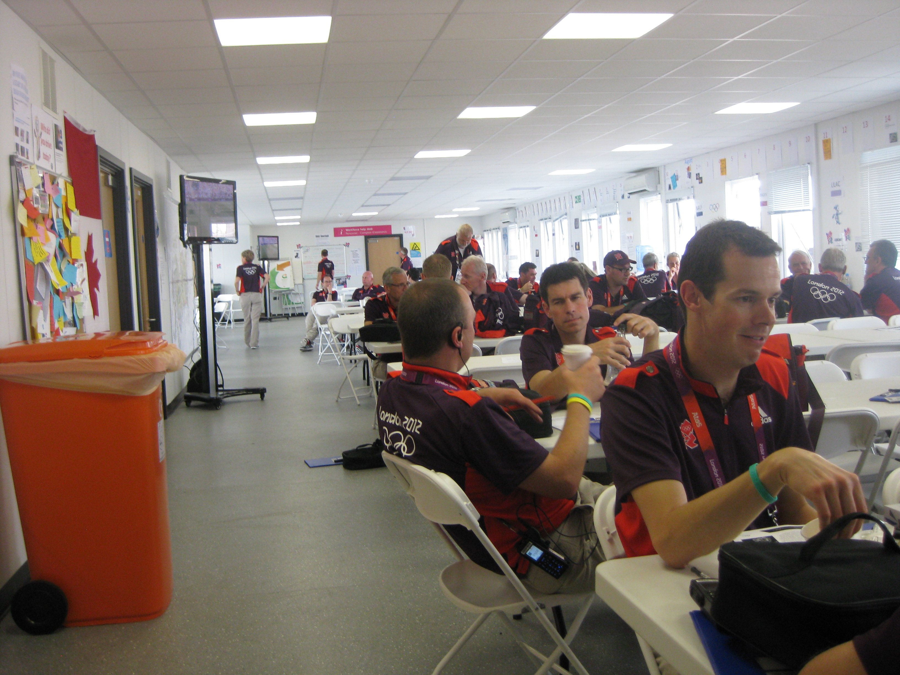

Shift 13 C088 Lilac Wednesday 8th August 2012
A really quiet and boring shift today. First task of the day was out to
Eton Manor to the T3 staging area, where I spent five and a half hours before geting a trip that was supposedly to the OFH, but was
actually going to Berkeley Square in Mayfair. The only thing we saw all day was the coming and going of various entertainment groups that went
into the Olympic Park. There was a bagpipe band, resplendent in kilts, and a
large group of Morris Dancers. The only other thin of note was I took a photo of the
Wellington Monument as I was driving round Hyde Park Corner, plus a driving
selfie.

Shift 14 C076 Lilac 5.00pm to 3.00am Thursday 9th August 2012
I left the hotel at 2.30pm to drive to Newbury Park Tube. It looked full when I got there but I managed to find an empty spot after a bit.
Arrived at FDO an hour early so sat down stairs, read my paper and watched the Olympics on the TV. A lot of us spent quite some time sitting
upstairs in the FDO, before we were tasked out to the Olympic Village. There was very little business to be had. I did get to see, passing by,
Louis Smith, Sonia O'Sullivan, Tristan Thomas and Kathryn Grainger.
I finally made it to the front of the pick up bay, and the car filled with 4 Australian athletes. I didn't recognise them, but I think one was a
400m hurdler. They wanted to go to the Tiger, Tiger nightclub, and had looked up the address and map on an iPhone. When they showed me, it was
on Haymarket, which is first right after Piccadilly Circus. I told them I could get there without needing to set the Sat Nav, which, after this
length of time, was perfectly true.
With no SatNav on, they decided they wanted the radio on, and we set off with Gaydar radio blaring full blast with all the windows down. All
of them were leaping up and down in their seats, putting the BMW suspension to the test. They got very excited when I went into the Limehouse
Link Tunnel and they realsied we were in the Olympic Lane. I didn't have the heart to tell them the lanes had been switched off for the night
as traffic was light. When we turned onto Picadilly, there was a massive traffic jam, and we crawled towards Picadilly Circus. The lads leant
out of the window and propositioned every pretty woman who walked past the car. I pulled up outside the nightclub, behind a taxi, so wasn't
quite outside the front doors. I asked if they were getting out, and they said they were waiting for the taxi to go so I could pull forward.
They wanted everyone to see them getting out of an official Olympic car. I had nowhere pressing to be so I did as they wanted.That was my last
action of the evening as I was called back to the depot to finish my shift.